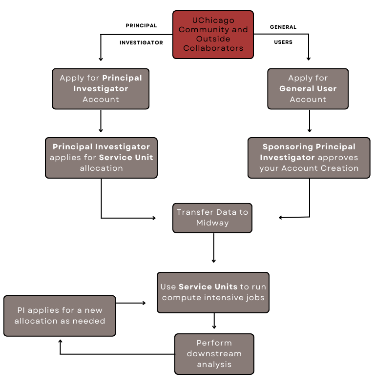

RCC User Guide
Welcome! This user guide provides information on accessing and making use of the Research Computing Center's High Performance Computing (HPC) resources.
How to use this guide
Here are a few things to keep in mind as you navigate the user guide:
- The guide is organized by system; be sure you're in the right section!
-
You will see in the top-right of grey code blocks, which will allow you to copy the contents of the block to your clipboard.
-
Try the search bar in the top right to quickly find what you're looking for (e.g., search: "GPU").
-
If you come across any content that you think should be changed or improved (typo, out-of-date, etc.), please feel free to do any of the following to help make the guide better:
- Create an Issue on GitHub
- Edit the guide's markdown source directly and submit a pull request
- Email help@rcc.uchicago.edu
The RCC Workflow
This flowchart illustrates the workflow of a typical researcher using the RCC's HPC resources.

Overview of RCC's HPC Systems
The following table provides a high-level summary of the various high-performance computing (HPC) systems that the RCC houses. While our flagship system for scientific computing is Midway3, offering state-of-the art CPU and GPU nodes, we also offer several other specialized HPC systems to meet users' needs.
System |
Description | Use |
|---|---|---|
| Midway3 | RCC's flagship HPC cluster for multi-purpose scientific computing | General |
| Midway2 | Primary HPC cluster from 2016-2021; users transitioning to Midway3 | General |
| MidwayR | RCC's HPC cluster for sensitive data, housed within the Secure Data Enclave | Specialized |
| Beagle3 | A GPU-focused HPC cluster for life sciences research | Specialized |
| DaLI | Data Lifecycle Instrument, a data storage and software platform | Specialized |
| MidwaySSD | HPC cluster dedicated to social sciences research | Specialized |
| Skyway | Run Midway jobs on cloud computing platforms | Specialized |
Where to start?
- Researchers interested in using the RCC systems can request an account.
- For Service Units (computing time) and storage resources, request an allocation.
- If you would like to chat with an RCC specialist about what services are best for you, please email help@rcc.uchicago.edu